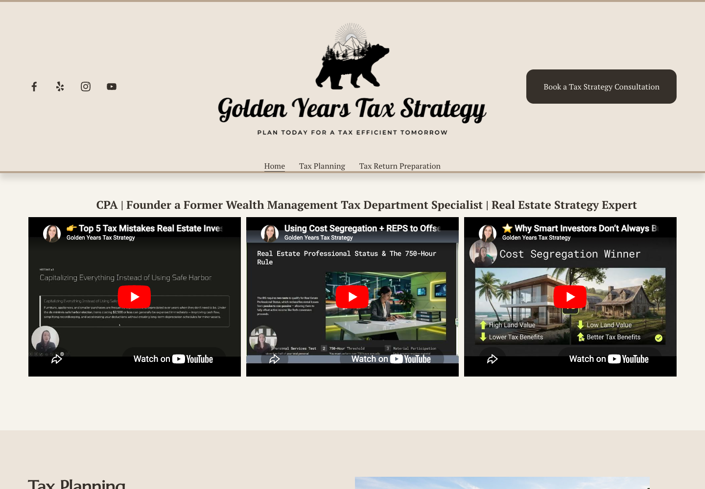

Positioning and structure
Clarified audience positioning, headings, content structure, common prospective-client questions, and the consultation path.
Case study · Tax strategy practice
A focused website and search sprint that clarified the practice, strengthened the consultation path, and created a path to eliminate a recurring hosting expense.

The work
Clarified audience positioning, headings, content structure, common prospective-client questions, and the consultation path.
Completed an SEO/AIO pass across search metadata and visible page content, supported by modest cosmetic improvements.
Moved the live site from Squarespace to Cloudflare, putting Golden Years in a position to eliminate its Squarespace website subscription.
Early signal
The owner reported that prospective contacts began saying they found the practice through Google, which she says had not happened before.
“Before the website changes, I wasn’t getting leads from Google. Now, when I ask people how they found me, a few are saying Google.”
Current public website